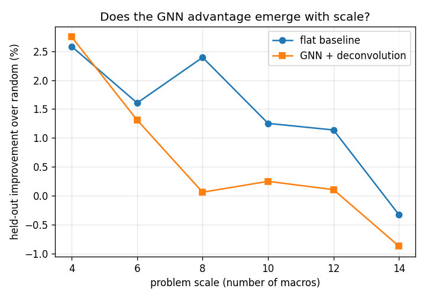

Does the GNN (Graph Neural Network) advantage emerge as problems get larger? A first, under-powered version of this study said yes. A properly-powered replication says no. This page reports both, honestly.
An initial study at three scales (4, 8, 14 macros) with a 25-problem test set suggested a clean trend: the GNN improvement rose 1.3% to 2.0% to 2.4% while the baseline stayed flat. It looked like the GNN advantage emerging with scale. But three points with a small test set and a single training seed is weak evidence, so the study was rerun with more points and more samples.
Six scales (4, 6, 8, 10, 12, 14 macros), a 40-problem held-out test set at each, same 100k-step training budget per run. Twelve training runs total.

| Scale (macros) | Flat baseline | GNN + deconvolution |
|---|---|---|
| 4 | 2.6% | 2.7% |
| 6 | 1.6% | 1.3% |
| 8 | 2.4% | 0.1% |
| 10 | 1.3% | 0.3% |
| 12 | 1.1% | 0.1% |
| 14 | -0.3% | -0.9% |
The decline of both lines to roughly random at 14 macros is the key signal, and it is a confound, not a conclusion about architecture. Every scale got the same 100k training budget, but larger problems have longer episodes and a much larger action space, so they need far more training to learn anything. At 14 macros the budget is simply too small to train either policy, so both collapse toward random. This means the study, as designed with a fixed budget, cannot properly test the scale hypothesis: the larger problems are undertrained, which masks any real effect.
See the repository README and RESULTS.md for the full arc.